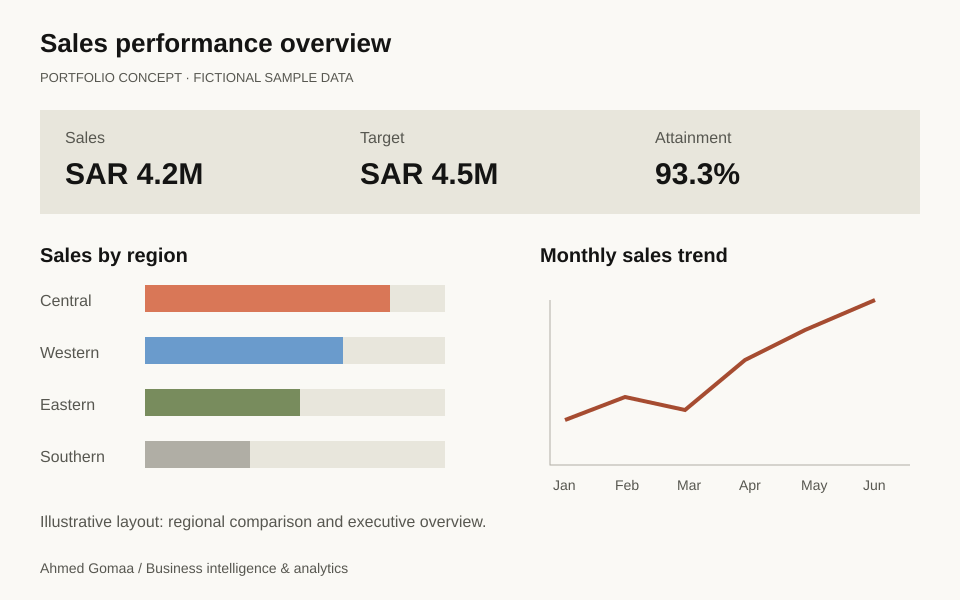
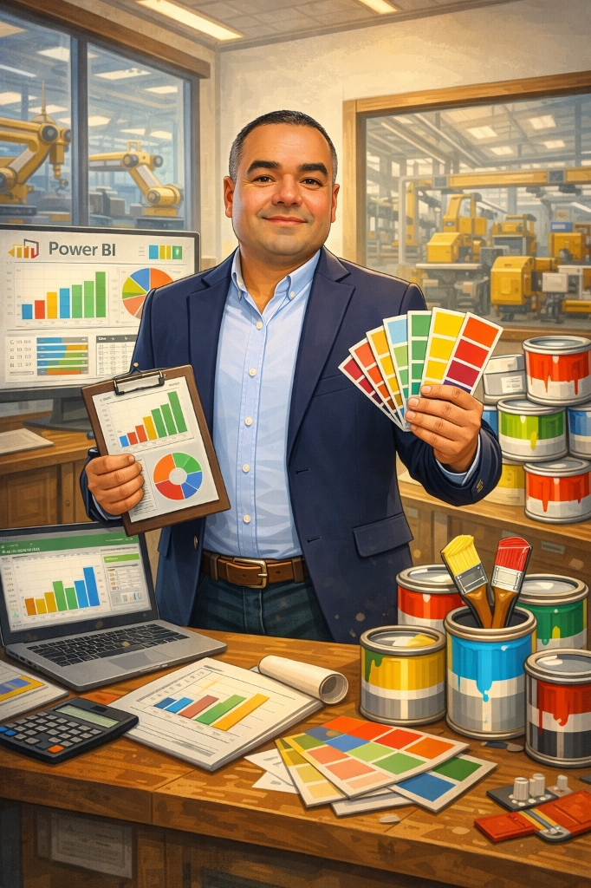
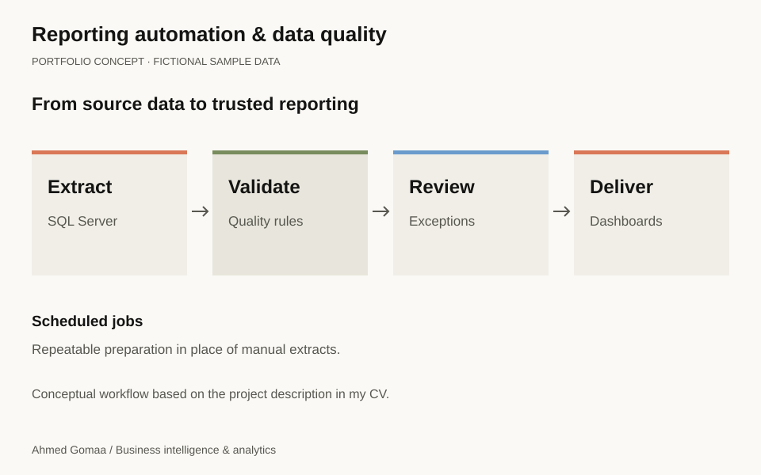
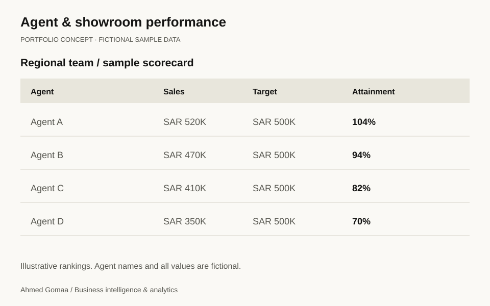

Power BI · DAX · SQL Server · SAP SD
Sales performance, in context.
A reporting suite connecting sales, targets, regions and product mix so commercial teams can explore performance from a shared view.
Ahmed Gomaa · Riyadh, Saudi Arabia
I build Power BI reporting and analytics solutions that help teams understand performance, uncover opportunities, and act with clarity.
Power BI / SQL Server / SAP SD

SELECTED WORK
From the data model to the final dashboard, my work connects business context with useful, reliable reporting.

A reporting suite connecting sales, targets, regions and product mix so commercial teams can explore performance from a shared view.

Scheduled preparation and quality checks that turn recurring extracts into a repeatable reporting workflow.

A scorecard bringing dynamic rankings, performance tiers and regional access into one reporting experience.
Previews are illustrative concepts, not production screenshots. Any figures shown are fictional sample data. Project descriptions reflect the experience documented in my CV.
HOW I WORK
Good reporting starts with understanding the decisions people need to make. I bring together commercial knowledge and technical skills to turn complex data into clear, practical tools.
EXPERIENCE
Commercial analytics, reporting automation, and performance management.
Leading commercial analytics and building reporting solutions for business teams.
THE BLOG
Articles on business intelligence, analytics, and the decisions behind the numbers.
Explore 30 videos and companion articles on Excel, Power Query and Power BI.
Browse articles & videosLET’S CONNECT
Have a reporting challenge or an idea for a project? I’d be happy to hear about it.